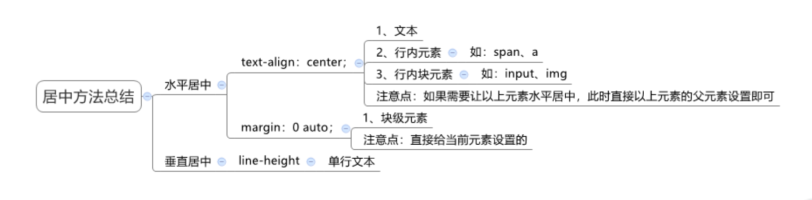
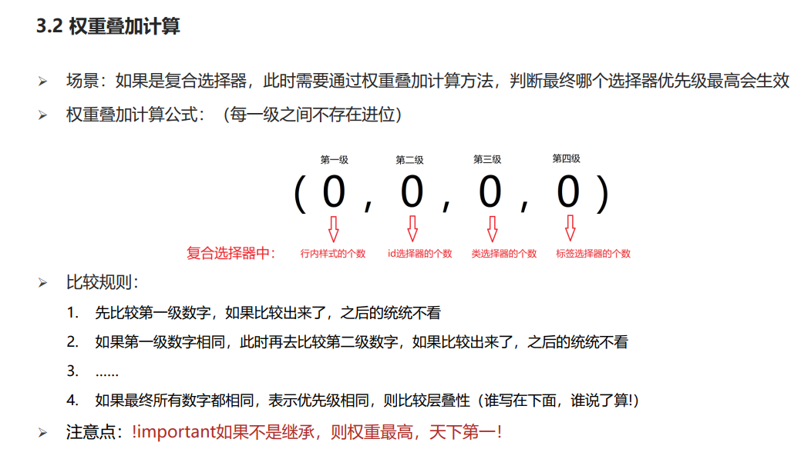
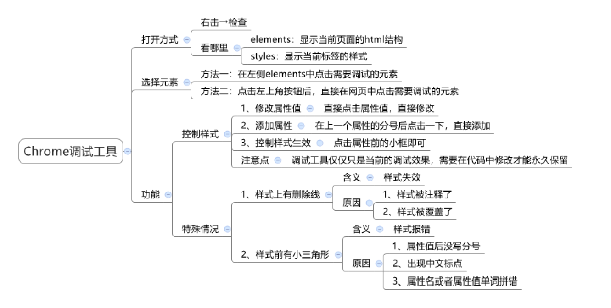

css网页美化师----- 注释用/* */ --- /* 类选择器 */
css书写顺序
| 顺序 | 类别 | 属性 |
|---|---|---|
| 1 | 布局属性 | display、position、float、clear、visibility、overflow |
| 2 | 盒子模型+背景 | width、height、margin、padding、border、background |
| 3 | 文本内容属性 | color、font、text-decoration、text-alingn、line-height |
| 4 | 点缀属性 | cursor、border-radius、text-shadow、box-shadow |
css样式引入方式
| css样式引入方式 | 描述 | 备注 |
|---|---|---|
| 内部样式表 | 直接在style标签里面写样式 | 理论上可以放到任何地方，可以控制页面的整个页面 |
| 行内样式表 | 在元素标签内部的style属性中设置css样式，适用于修改单样式，控制一个标签 | 在双引号中间，写法要符合css规范 如：<div style="color:red; font-size=12px">样式<div> |
| 外部样式表 | 样式单独在一个css样式文件中，控制多个页面 新建一个后缀名为css的文件，css样式都在这个文件内， 要把css文件引入到html文件中， css样式文件中只有样式，没有标签 |
引入方式：<link rel="stylesheet" hres="css文件及路径-"> |
单位大小
| 标签 | 描述 | 备注 |
|---|---|---|
| px | 像素 | 修改字体大小必须加px |
| em | 是一个相对单位，相当于font-size元素一个文字的大小 | 如果没有赋值，会按照父元素的1个文字大小 |
css选择器分为基础选择器，复合选择器，基础选择器又分为标签选择器，类选择器，id选择器，通配符选择器
| 选择器 | 描述 | css写法 | html写法 |
|---|---|---|---|
| 标签选择器 | 标签名 {属性1：属性值1} | ||
| .类名 | 类选择器类 名自己启 不能使用HTML标签，中文，纯数字当类名 |
.red { color:red} | <p class="red">红色</p> |
| 多类名 一个标签有多个类名 在标签class属性中写多个类名，多个类名中间必须用空格隔开 |
<p class="red font:20">红色</p> | ||
| #id | id选择器 只能调用一次html元素以以id属性来设置选择器，css中id以“#”来定义 |
#ping {属性1：属性值； } | <div id="ping"></div> |
| * | 通配符选择器 不需要调用 用*定义，代表所有元素（标签） |
*{属性：属性值；} |
选择器进阶
| 选择器 | 描述 | 作用 | 结果 | 备注 | ||||||||||||||||||||||||
|---|---|---|---|---|---|---|---|---|---|---|---|---|---|---|---|---|---|---|---|---|---|---|---|---|---|---|---|---|
| 复合选择器 |
|
|||||||||||||||||||||||||||
| 并集选择器 | 同时选择多组标签，设置相同的样式 | 选择器1 ， 选择器2 { css } |
1. 并集选择器中的每组选择器之间通过 , 分隔 2. 并集选择器中的每组选择器可以是基础选择器或者复合选择器 >3. 并集选择器中的每组选择器通常一行写一个，提高代码的可读性 |
|||||||||||||||||||||||||
| 交集选择器 | 选中页面中 同时满足 多个选择器的标签 | 选择器1选择器2 { css } | （既又原则）找到页面中 既 能被选择器1选中，又 能被选择器2选中的标签，设置样式 |
1. 交集选择器中的选择器之间是紧挨着的，没有东西分隔 2. 交集选择器中如果有标签选择器，标签选择器必须写在最前面 |
||||||||||||||||||||||||
| :hover伪类选择器 | 选中鼠标悬停在元素上的状态，设置样式 | 选择器:hover { css } | 伪类选择器选中的元素的某种状态 | |||||||||||||||||||||||||
| emmet语法 | 通过简写语法，快速生成代码 |
|
选择器进阶汇总
| 选择器 | 作用 | 格式 | 示例 |
|---|---|---|---|
| 后代选择器 | 找后代 | 选择器之间通过空格分隔 | .father .son {css} |
| 子代选择器 | 找儿子 | 选择器之间通过 > 分隔 | .father > .son {css} |
| 并集选择器 | 找到多类元素 | 选择器之间通过 . 分隔 | div.p.span{css} |
| 交集选择器 | 找同时满足多个选择器的元素 | 选择器之间紧挨着 | p.red {css} |
| hover伪类选择器 | 选中鼠标悬停时在元素的状态 | :hover | a:hover {css} |
链接伪类选择器：常用于选中超链接的不同状态
| 选择器语法 | 功能 | 注意点 | |
|---|---|---|---|
| a:link{} | 选中a链接未选中的状态 | 如果需要同时实现以上四种伪类状态效果，需要按照 LVHA 顺序书写 其中 :hover伪类选择器 使用更为频繁，常用于选择各类元素的悬停状态 |
|
| a:visited | 选中a链接选中后的状态 | ||
| a:hover | 选中鼠标悬停的状态 | ||
| a:active | 选中鼠标按下的状态 |
焦点伪类选择器
| 场景 | 语法 | 效果 |
|---|---|---|
| 用于选中元素获取焦点时状态，常用于表单控件 | input:focus{bockground-color:skyblue} | 表单控件获取焦点时默认会显示外部轮廓线 |
属性选择器:通过元素上的HTML属性来选择元素，常用于选择 input 标签
| 选择器 | 功能 | 例如 | 注意 |
|---|---|---|---|
| E[attr] | 选择具有attr属性的E元素 | E[attr="val"] 选择具有attr属性并且属性值等于val的E元素 |
标红的才是选择器 |
| input[type="text"] { } | 选中页面中所有的文本框 | ||
| [type^="text"] { } | 选择type的属性值以text开头的所有元素 | ||
| [type$="text"] { } | 选择type的属性值以text结束的所有元素 | ||
| [type*="text"] { } | 选择type的属性值包含text的所有元素 |
结构伪类选择器
| 作用 | 优势 | 场景 |
|---|---|---|
| 根据元素在HTML中的结构关系查找元素 | 减少对于HTML中类的依赖，有利于保持代码整洁 | 常用于查找某父级选择器中的子元素 |
| 描述 | 选择器标签 | 注意 | ||||||||||
|---|---|---|---|---|---|---|---|---|---|---|---|---|
| 匹配父元素中的第一个子元素，并且是E元素 | E:first-child(){} |
n的注意点：
1. n为：0、1、2、3、4、5、6、…… 2. 通过n可以组成常见公式
|
||||||||||
| 匹配父元素中的最后一个子元素，并且是E元素 | E:last-child(){} | |||||||||||
| 匹配父元素中的第n个子元素，并且是E元素 | E:nth-child(n){} | |||||||||||
| 匹配父元素中的倒数第n个子元素，并且是E元素 | E:nth-last--child(n){} | |||||||||||
| 只在父元素的同类型（E）子元素范围中，匹配第n个 | E:nth-of-type(n){} | :nth-child → 直接在所有孩子中数个数 :nth-of-type → 先通过该 类型 找到符合的一堆子元素，然后在这一堆子元素中数个数 |
css选择器大全
| 选择器 | 示例 | 描述 |
|---|---|---|
| .class | .intro | 选择所有class="intro"的元素 |
| #id | #firstname | 选择所有id="firstname"的元素 |
| * | * | 选择所有元素 |
| element | p | 选择所有p元素 |
| element,element | div,p | 选择所有div元素和p元素 |
| element element | div p | 选择div元素内的所有p元素 |
| element>element | div>p | 选择所有父级是div元素的p元素 |
| element+element | div+p | 选择所有紧跟在div元素之后的第一个p元素 |
| [attribute] | [target] | 选择所有带有target属性元素 |
| [attribute=value] | [target=-blank] | 选择所有使用target="-blank"的元素 |
| [attribute~=value] | [title~=flower] | 选择标题属性包含单词"flower"的所有元素 |
| [attribute|=language] | [lang|=en] | 选择 lang 属性等于 en，或者以 en- 为开头的所有元素 |
| :link | a:link | 选择所有未访问链接 |
| :visited | a:visited | 选择所有访问过的链接 |
| :active | a:active | 选择活动链接 |
| :hover | a:hover | 选择鼠标在链接上面时 |
| :focus | input:focus | 选择具有焦点的输入元素 |
| :first-letter | p:first-letter | 选择每一个p元素的第一个字母 |
| :first-line | p:first-line | 选择每一个p元素的第一行 |
| :first-child | p:first-child | 指定只有当p元素是其父级的第一个子级的样式。 |
| :before | p:before | 在每个p元素之前插入内容 |
| :after | p:after | 在每个p元素之后插入内容 |
| :lang(language) | p:lang(it) | 选择一个lang属性的起始值="it"的所有p元素 |
| element1~element2 | p~ul | 选择p元素之后的每一个ul元素 |
| [attribute^=value] | a[src^="https"] | 选择每一个src属性的值以"https"开头的元素 |
| [attribute$=value] | a[src$=".pdf"] | 选择每一个src属性的值以".pdf"结尾的元素 |
| [attribute*=value] | a[src*="runoob"] | 选择每一个src属性的值包含子字符串"runoob"的元素 |
| :first-of-type | p:first-of-type | 选择每个p元素是其父级的第一个p元素 |
| :last-of-type | p:last-of-type | 选择每个p元素是其父级的最后一个p元素 |
| :only-of-type | p:only-of-type | 选择每个p元素是其父级的唯一p元素 |
| :only-child | p:only-child | 选择每个p元素是其父级的唯一子元素 |
| :nth-child(n) | p:nth-child(2) | 选择每个p元素是其父级的第二个子元素 |
| :nth-last-child(n) | p:nth-last-child(2) | 选择每个p元素的是其父级的第二个子元素，从最后一个子项计数 |
| :nth-of-type(n) | p:nth-of-type(2) | 选择每个p元素是其父级的第二个p元素 |
| :nth-last-of-type(n) | p:nth-last-of-type(2) | 选择每个p元素的是其父级的第二个p元素，从最后一个子项计数 |
| :last-child | p:last-child | 选择每个p元素是其父级的最后一个子级。 |
| :root | :root | 选择文档的根元素 |
| :empty | p:empty | 选择每个没有任何子级的p元素（包括文本节点） |
| :target | #news:target | 选择当前活动的#news元素（包含该锚名称的点击的URL） |
| :enabled | input:enabled | 选择每一个已启用的输入元素 |
| :disabled | input:disabled | 选择每一个禁用的输入元素 |
| :checked | input:checked | 选择每个选中的输入元素 |
| :not(selector) | :not(p) | 选择每个并非p元素的元素 |
| ::selection | ::selection | 匹配元素中被用户选中或处于高亮状态的部分 |
| :out-of-range | :out-of-range | 匹配值在指定区间之外的input元素 |
| :in-range | :in-range | 匹配值在指定区间之内的input元素 |
| :read-write | :read-write | 用于匹配可读及可写的元素 |
| :read-only | :read-only | 用于匹配设置 "readonly"（只读） 属性的元素 |
| :optional | :optional | 用于匹配可选的输入元素 |
| :required | :required | 用于匹配设置了 "required" 属性的元素 |
| :valid | :valid | 用于匹配输入值为合法的元素 |
| :invalid | :invalid | 用于匹配输入值为非法的元素 |
css类选择器命名规则参考表
| CSS样式命名 | 说明 |
|---|---|
| #wrapper | 页面外围控制整体布局宽度 |
| #container或#content | 容器,用于最外层 |
| #layout | 布局 |
| #head, #header | 页头部分 |
| #foot, #footer | 页脚部分 |
| #nav | 主导航 |
| #subnav | 二级导航 |
| #menu | 菜单 |
| #submenu | 子菜单 |
| #sideBar | 侧栏 |
| #sidebar_a, #sidebar_b | 左边栏或右边栏 |
| #main | 页面主体 |
| #tag | 标签 |
| #msg #message | 提示信息 |
| #tips | 小技巧 |
| #vote | 投票 |
| #friendlink | 友情连接 |
| #title | 标题 |
| #summary | 摘要 |
| #loginbar | 登录条 |
| #searchInput | 搜索输入框 |
| #hot | 热门热点 |
| #search | 搜索 |
| #search_output | 搜索输出和搜索结果相似 |
| #searchBar | 搜索条 |
| #search_results | 搜索结果 |
| #copyright | 版权信息 |
| #branding | 商标 |
| #logo | 网站LOGO标志 |
| #siteinfo | 网站信息 |
| #siteinfoLegal | 法律声明 |
| #siteinfoCredits | 信誉 |
| #joinus | 加入我们 |
| #partner | 合作伙伴 |
| #service | 服务 |
| #regsiter | 注册 |
| #arr/arrow | 箭头 |
| #guild | 指南 |
| #sitemap | 网站地图 |
| #list | 列表 |
| #homepage | 首页 |
| #subpage | 二级页面子页面 |
| #tool, #toolbar | 工具条 |
| #drop | 下拉 |
| #dorpmenu | 下拉菜单 |
| #status | 状态 |
| #scroll | 滚动 |
| .tab | 标签页 |
| .left .right .center | 居左、中、右 |
| .news | 新闻 |
| .download | 下载 |
| .banner | 广告条(顶部广告条) |
| .products | 产品 |
| .products_prices | 产品价格 |
| .products_description | 产品描述 |
| .products_review | 产品评论 |
| .editor_review | 编辑评论 |
| .news_release | 最新产品 |
| .publisher | 生产商 |
| .screenshot | 缩略图 |
| .faqs | 常见问题 |
| .keyword | 关键词 |
| .blog | 博客 |
| .forum | 论坛 |
CSS文件命名参考规则
| CSS文件命名 | 说明 |
|---|---|
| master.css,style.css | 主要的 |
| module.css | 模块 |
| base.css | 本共用基 |
| layout.css | 布局，版面 |
| themes.css | 主题 |
| columns.css | 专栏 |
| font.css | 文字、字体 |
| forms.css | 表单 |
| mend.css | 补丁 |
| print.css | 打印 |
文字和文本样式
| 描述 | 标签 | 注释 | ||||||||||
|---|---|---|---|---|---|---|---|---|---|---|---|---|
| 字体大小 | font-size | 值：数字 + px，谷歌浏览器默认文字大小是16px，单位需要设置，否则无效 | ||||||||||
| 字体粗细 | font-weight |
|
||||||||||
| 字体样式（是否倾斜） | font-style | 正常（默认值）：normal 倾斜：italic |
||||||||||
| 字体 | font-family | 常见取值：具体字体1,具体字体2,具体字体3,具体字体4,...,字体系列 注意点： 1. 如果字体名称中存在多个单词，推荐使用引号包裹 2. 最后一项字体系列不需要引号包裹 3. 网页开发时，尽量使用系统常见自带字体，保证不同用户浏览网页都可以正确显示 渲染规则： 1. 从左往右按照顺序查找，如果电脑中未安装该字体，则显示下一个字体 2. 如果都不支持，此时会根据操作系统，显示最后字体系列的默认字体 |
||||||||||
| 样式的层叠问题 | 无 | 如果给同一个标签设置了相同的属性，此时样式会层叠（覆盖），写在最下面的会生效 | ||||||||||
| 体font相关属性的连写 | ➢ 属性名：font (复合属性) ➢ 取值： • font : style weight size family; ➢ 省略要求： • 只能省略前两个，如果省略了相当于设置了默认值 |
注意点：如果需要同时设置单独和连写形式， 要么把单独的样式写在连写的下面，要么把单独的样式写在连写的里面 | ||||||||||
| 文本缩进 （首行缩进） |
text-indent | 取值： • 数字+px, • 数字+em（推荐：1em = 当前标签的font-size的大小） | ||||||||||
| 文本水平对齐方式 | text-align |
如果需要让文本水平居中，text-align属性给文本所在标签（文本的父元素）设置
➢ text-align : center 能让哪些元素水平居中？
1. 文本 2. span标签、a标签 3. input标签、img标签 ➢ 注意点： 1. 如果需要让以上元素水平居中， text-align : center 需要给以上元素的 父元素设置 |
||||||||||
| 文本修饰 | text-decoration |
|
||||||||||
| 行高 | line-height （ 取值：• 数字+px • 倍数（当前标签font-size的倍数）） line-height : 1 可以取消上下间距 |
➢ 应用： 1. 让单行文本垂直居中可以设置 line-height : 文字父元素高度 2. 网页精准布局时，会设置 line-height : 1 可以取消上下间距 ➢ 行高与font连写的注意点： • 如果同时设置了行高和font连写，注意覆盖问题 • font : style weight size/line-height family ; |
（大盒子）水平居中
➢ 如果需要让div、p、h（大盒子）水平居中？
• 可以通过margin : 0 auto ; 实现
➢ 注意点：
1. 如果需要让 div、p、h（大盒子） 水平居中，直接给 当前元素本身 设置即可
2. margin：0 auto 一般针对于固定宽度的盒子，如果大盒子没有设置宽度，此时会默认占满父元素的宽度
背景相关属性
| 描述 | 标签 | 取值 | 属性 | 备注 | ||||||||||||||||
|---|---|---|---|---|---|---|---|---|---|---|---|---|---|---|---|---|---|---|---|---|
| 背景 | background | url() |
|
|||||||||||||||||
| 背景颜色 | background-color | 颜色取值：关键字、rgb表示法、rgba表示法、十六进制…… |
背景颜色默认值是透明：transparent或rgba(0,0,0,0) 第4个0是图片的透明度，取值（0-1） 背景颜色不会影响盒子大小，并且还能看清盒子的大小和位置，一般在布局中会习惯先给盒子设置背景颜色 |
|||||||||||||||||
| 背景图片 | background-image |
背景图片中url中可以省略引号 背景图片默认是在水平和垂直方向平铺的 背景图片仅仅是指给盒子起到装饰效果，类似于背景颜色，是不能撑开盒子的 |
||||||||||||||||||
| 背景图片大小 | background-size |
|
||||||||||||||||||
| 背景渐变 | linear-gradient | linear-gradient(to 方向（也可以时角度）,颜色1,颜色2); |

| 描述 | 标签 | 属性值 | 书写顺序 | 省略问题 | 注意点 |
|---|---|---|---|---|---|
| 背景相关属性的连写形式 | background | 单个属性值的合写，取值之间以空格隔开 | background：color image repeat position |
可以按照需求省略 特殊情况：在pc端，如果盒子大小和背景图片大小一样，此时可以直接写 background：url() |
如果需要设置单独的样式和连写 要么把单独的样式写在连写的下面 要么把单独的样式写在连写的里 |
|
img标签是一个标签，不设置宽高默认会以原尺寸显示 |
div标签 + 背景图片 需要设置div的宽高，因为背景图片只是装饰的CSS样式，不能撑开div标签 |
|---|
盒子的默认颜色为透明色 rgba(0,0,0.3)黑色半透明
rgba(255,255,255，.3)白色半透明 transparent:背景透明
元素显示模式
| 元素名称 | 显示特点 | 代表标签 | ||||||||||||
|---|---|---|---|---|---|---|---|---|---|---|---|---|---|---|
| 块级元素 |
1. 独占一行（一行只能显示一个） 2. 宽度默认是父元素的宽度，高度默认由内容撑开 3. 可以设置宽高 |
div、p、h系列、ul、li、dl、dt、dd、form、header、nav、footer…… | ||||||||||||
| 行内元素 |
1. 一行可以显示多个 2. 宽度和高度默认由内容撑开 3. 不可以设置宽高 |
a、span 、b、u、i、s、strong、ins、em、del…… | ||||||||||||
| 行内块级元素 |
1. 一行可以显示多个 2. 可以设置宽高 |
input、textarea、button、select…… 特殊情况：img标签有行内块元素特点，但是Chrome调试工具中显示结果是inline |
||||||||||||
| 元素显示模式转换 |
|
|||||||||||||
HTML嵌套规范注意
1. 块级元素一般作为大容器，可以嵌套：文本、块级元素、行内元素、行内块元素等等……
➢ 但是：p标签中不要嵌套div、p、h等块级元素
2. a标签内部可以嵌套任意元素
➢ 但是：a标签不能嵌套a标签
居中方法总结
css特性
| css特性 | 介绍 | 作用 | 扩展 |
|---|---|---|---|
| 继承性 |
➢ 特性：子元素有默认继承父元素样式的特点（子承父业） ➢ 可以继承的常见属性(文字控制属性都可以继承) 1. color 2. font-style、font-weight、font-size、font-family 3. text-indent、text-align 4. line-height 5. …… 注意：可以通过调试工具判断样式是否可以继承 |
➢ 好处：可以在一定程度上减少代码 ➢ 常见应用场景： 1. 可以直接给ul设置 list-style:none 属性，从而去除列表默认的小圆点样式 2. 直接给body标签设置统一的font-size，从而统一不同浏览器默认文字大小 |
继承失效的特殊情况 ➢ 如果元素有浏览器默认样式，此时继承性依然存在，但是优先显示浏览器的默认样式 1. a标签的color会继承失效 • 其实color属性继承下来了，但是被浏览器默认设置的样式给覆盖掉了 2. h系列标签的font-size会继承失效 • 其实font-size属性继承下来了，但是被浏览器默认设置的样式给覆盖掉了 |
| 层叠性 |
➢ 特性： 1. 给同一个标签设置不同的样式 → 此时样式会层叠叠加 → 会共同作用在标签上 2. 给同一个标签设置相同的样式 → 此时样式会层叠覆盖 → 最终写在最后的样式会生效 ➢ 注意点： 1. 当样式冲突时，只有当选择器优先级相同时，才能通过层叠性判断结果 |
如果给同一个标签设置了相同的属性，此时样式会？ • 会层叠覆盖，写在最后的会生效 ➢ 如果给同一个标签设置了不同的样式，此时样式会？ • 会层叠叠加，共同作用在标签上 |
|
| 优先级 |  | ||
css三大特性：层叠行、继承性、优先级
| 特性 | 目的 | 描述 | 原则 | ||||||||||||||
|---|---|---|---|---|---|---|---|---|---|---|---|---|---|---|---|---|---|
| 层叠行 | 解决样式冲突问题 | 相同的选择器设置相同的样式时，一个样式会覆盖（层叠）另一个冲突的样式，层叠行主要解决样式冲突问题 口诀：长江后浪推前浪，前浪死在沙滩上 |
就近原则，那个样式离结构进，就执行那个样式 | ||||||||||||||
| 继承性 | 可以简化代码，降低css的复杂程度 | 子标签会继承父标签的某些样式，如文本颜色和字号，简单理解就是子承父业 子元素可以继承父元素的样式（text-、font-、line-、这些元素开头的可以继承，以及color属性） 口诀：龙生龙，凤生风，老鼠的孩子会打洞 |
行高的继承性： 如果子标签这样写font:12px/1.5 Microsoft YaHei ，那么子元素的行高会是父元素行高的1.5倍 注意12px:文字大小。1.5是行高的1.5倍，如果是数字加单位就是行高 |
||||||||||||||
| 优先集 | 当同一个元素指定多个选择器时，就会有优先级的产生 1.选择器相同，则执行层叠行。 2.选择器不同，则根据选择器权重执行 |
|
注意：1.权重是有4组数字组成，但是不会有进位， 2.可以理解为类选择器永远大于元素选择器，id选择器永远大于类选择器，以此类推 继承的权重是0 a标签浏览器单独指定了一个样式 |
chroom调试工具
盒子模型(Box Model)
1. 页面中的每一个标签，都可看做是一个 “盒子”，通过盒子的视角更方便的进行布局
2. 浏览器在渲染（显示）网页时，会将网页中的元素看做是一个个的矩形区域，我们也形象的称之为 盒子
| 描述 | 标签 | 注释 | |||||||||||||||||||||||||
|---|---|---|---|---|---|---|---|---|---|---|---|---|---|---|---|---|---|---|---|---|---|---|---|---|---|---|---|
| 边框 | border |
边框的复合型写法：顺序：边框粗细、边框样式、边框颜色
如：border:5px solid red 边框连写或单独设置单条边框样式时一定要注意边框的层叠行
边框会影响盒子的实际大小
注意点： ① 设置width和height是内容的宽高！② 设置border会撑大盒子！ |
|||||||||||||||||||||||||
| 上边框 | border-top | ||||||||||||||||||||||||||
| 下边框 | border-bottom | ||||||||||||||||||||||||||
| 左边框 | border-left | ||||||||||||||||||||||||||
| 右边框 | border-right | ||||||||||||||||||||||||||
| 去除默认边框 | border:none | ||||||||||||||||||||||||||
| box-sizing : border-box ; | 盒子自动内减 | 浏览器会自动计算多余大小，自动在内容中减去 | |||||||||||||||||||||||||
| 内容 | content | ||||||||||||||||||||||||||
| 内边距 | padding |
|
|||||||||||||||||||||||||
| 外边距 | margin |
|
优点：浏览器会自动计算多余大小，自动在内容中减去
盒子模型注意事项（margin、padding）
| 事项 | 场景 | 结果 | 解决方法 |
|---|---|---|---|
| 清除默认内外边距 | 浏览器会默认给部分标签设置默认的margin和padding，但一般在项目开始前需要先清除这些标签默认的
margin和padding，后续自己设置 • 比如：body标签默认有margin：8px • 比如：p标签默认有上下的margin • 比如：ul标签默认由上下的margin和padding-left |
样式{margin:0;padding:0} 或 *{margin:0;padding:0} |
|
| 块级元素水平居中 | 块级元素水平居中 | 1：盒子必须右宽度（width）。2:盒子左右外边距都设置0
写法：margin:0 auto |
|
| 外边距折叠现象 – ① 合并现象 | 垂直布局 的 块级元素，上下的margin会合并 | 最终两者距离为margin的最大值 | 避免就好 • 只给其中一个盒子设置margin即可 |
| 外边距折叠现象 – ② 塌陷现象 | 互相嵌套 的 块级元素，子元素的 margin-top 会作用在父元素上 | 导致父元素一起往下移动 | 1. 给父元素设置border-top 或者 padding-top（分隔父子元素的margin-top） 2. 给父元素设置overflow：hidden 3. 转换成行内块元素 4. 设置浮动 |
| 行内元素的margin和padding无效情况 | 1. 水平方向的margin和padding布局中有效！ 2. 垂直方向的margin和padding布局中无效！ |
给行内元素设置margin和padding时 |
1. 如果子盒子没有设置宽度，此时宽度默认是父盒子的宽度
2. 此时给子盒子设置左右的padding或者左右的border，此时不会撑大子盒子
盒子圆角边框
| 描述 | 标签 | 备注 | 连写 | ||||||||
|---|---|---|---|---|---|---|---|---|---|---|---|
| 圆角边框 | border-radius (数值可以是百分比、也可以是px) |
高设定为正方形的一半，可以得到圆形 （顺序不能颠倒） |
|
||||||||
| border-top-left-radius | 左上角 | ||||||||||
| border-top-right-radius | 右上角 | ||||||||||
| border-bottom-right-radius | 右下角 | ||||||||||
| border-bottom-left-radius | 左下角 |
盒子阴影
| 描述 | 标签 | 属性值 | 如 | ||||||||||||||
|---|---|---|---|---|---|---|---|---|---|---|---|---|---|---|---|---|---|
| 盒子阴影 | box-shadow |
|
|
文字阴影
| 描述 | 标签 | 属性值 | 如 | ||||||||||
|---|---|---|---|---|---|---|---|---|---|---|---|---|---|
| 文字阴影 | text-shadow |
|
|
伪元素
| 概念 | 区别 | 种类 | 注意点 | ||||||
|---|---|---|---|---|---|---|---|---|---|
| 一般页面中的非主体内容可以使用伪元素 | 1. 元素：HTML 设置的标签 2. 伪元素：由 CSS 模拟出的标签效果 |
|
1. 必须设置content属性才能生效 2. 伪元素默认是行内元素 |
标准流
常见标准流排版规则：
1. 块级元素：从上往下，垂直布局，独占一行
2. 行内元素 或 行内块元素：从左往右，水平布局，空间不够自动折行
float浮动
| 描述 | 标签 | 特点 | 注意点 |
|---|---|---|---|
| 元素不浮动（默认值） | float:none |
浮动元素会具有行内块元素特性 1. 浮动元素会脱标(脱离标准流)，在标准流中不占位置 2. 浮动元素比标准流高出半个级别，可以覆盖标准流中的元素 3. 浮动找浮动，下一个浮动元素会在上一个浮动元素后面左右浮动 4. 浮动元素有特殊的显示效果：① 一行可以显示多个 ② 可以设置宽高 |
浮动的元素不能通过text-align:center或者margin:0 auto |
| 左浮动 | float：left | ||
| 右浮动 | float:right |
清除浮动
| 含义 | 原因 | 目的 |
|---|---|---|
| 清除浮动带来的影响、如果子元素浮动了，此时子元素不能撑开标准流的块级父元素 | 子元素浮动后脱标 → 不占位置 | 需要父元素有高度，从而不影响其他网页元素的布局 |
清除浮动方法
| 方法 | 操作 | 特点 |
|---|---|---|
| ① 直接设置父元素高度 | 优点：简单粗暴，方便 缺点：有些布局中不能固定父元素高度。如：新闻列表、京东推荐模块 |
|
| ② 额外标签法 | 1. 在父元素内容的最后添加一个块级元素
2. 给添加的块级元素设置 clear:both |
缺点：会在页面中添加额外的标签，会让页面的HTML结构变得复杂 |
| ③ 单伪元素清除法 | 用伪元素替代了额外标签 | 优点：项目中使用，直接给标签加类即可清除浮动 |
| ④ 双伪元素清除法 | 优点：项目中使用，直接给标签加类即可清除浮动 | |
| ⑤ 给父元素设置 overflow : hidden | 直接给父元素设置 overflow : hidden | 优点：方便 |
清除浮动
| 单伪元素清除浮动 | 双伪元素清除浮动 |
|---|---|
|
|
、
定位的常见应用场景是什么？
1. 解决盒子与盒子之间的层叠问题 → 定位之后元素层级最高，可以层叠在其他盒子上2. 可以让盒子始终固定在屏幕中的某个位置
定位
| 属性名 | 定位方式 | 属性值 | 偏移值 | ||||||||||||||||||||
|---|---|---|---|---|---|---|---|---|---|---|---|---|---|---|---|---|---|---|---|---|---|---|---|
| position | 静态定位 | static |
|
||||||||||||||||||||
| 相对定位 | relative | ||||||||||||||||||||||
| 绝对定位 | absolute | ||||||||||||||||||||||
| 固定定位 | fixed |
静态定位
| 介绍 | 代码 | 注意点 | |
|---|---|---|---|
| 静态定位是默认值，就是之前认识的标准流。 | position:static | 1. 静态定位就是之前标准流，不能通过方位属性进行移动 2. 之后说的定位不包括静态定位，一般特指后几种：相对、绝对、固定 |
相对定位
| 介绍 | 代码 | 特点 | 应用场景 |
|---|---|---|---|
| 自恋型定位，相对于自己之前的位置进行移动 | position:relative | 1. 需要配合方位属性实现移动 2. 相对于自己原来位置进行移动 3. 在页面中占位置 → 没有脱标 |
1. 配合绝对定位组CP（子绝父相） 2. 用于小范围的移动 |
绝对定位
| 介绍 | 代码 | 特点 | 应用场景 | 绝对定位到底相对于谁进行偏移 |
|---|---|---|---|---|
| 拼爹型定位，相对于非静态定位的父元素进行定位移动 | position:absolute | 1. 需要配合方位属性实现移动 2. 默认相对于浏览器可视区域进行移动 3. 在页面中不占位置 → 已经脱标 |
配合绝对定位组CP（子绝父相） |
1. 祖先元素中没有定位 → 默认相对于浏览器进行移动 2. 祖先元素中有定位 → 相对于 最近的 有定位 的祖先元素进行移动 |
固定定位
| 介绍 | 代码 | 特点 | 应用场景 |
|---|---|---|---|
| 死心眼型定位，相对于浏览器进行定位移动 | position:fixed | 1. 需要配合方位属性实现移动 2. 相对于浏览器可视区域进行移动 3. 在页面中不占位置 → 已经脱标 |
让盒子固定在屏幕中的某个位置 |
粘性定位
| 介绍 | 代码 | 特点 | 应用场景 |
|---|---|---|---|
| position:stkicky | 必须配合方位词使用 |
子绝父相
| 场景 | 含义 | 好处 | 注意 |
|---|---|---|---|
| 让子元素相对于父元素进行自由移动 | • 子元素：绝对定位 • 父元素：相对定位 |
父元素是相对定位，则对网页布局影响最小 |
在使用子绝父相的时候，发现父元素已经有绝对定位了，此时直接子绝即可！ 原因：父元素已经有定位已经满足要求，如果盲目修改父元素定位方式，可能会影响之前写好的布局 |
子绝父相居中案例
| 子绝父相水平居中案例 | 子绝父相水平垂直都居中案例 |
|---|---|
|
1. 子绝父相 2. 先让子盒子往右移动父盒子的一半 • left：50% 3. 再让子盒子往左移动自己的一半 • 普通做法：margin-left：负的子盒子宽度的一半 缺点：子盒子宽度变化后需要重新改代码 • 优化做法：transform：translateX(-50%) 优点：表示沿着X轴负方向（往左）始终移动自己宽度的一半，子盒子宽度变化不需要更改代码 |
1. 子绝父相 2. 让子盒子往右走大盒子一半 • left：50% 3. 让子盒子往下走大盒子一半 • top：50% 4. 让子盒子往左+往上走自己的一半 • transform：translate(-50%，-50%)； |
元素层级问题
| 不同布局方式元素的层级关系 | 不同定位之间的层级关系： |
|---|---|
| 标准流 < 浮动 < 定位 | 相对、绝对、固定默认层级相同 此时HTML中写在下面的元素层级更高，会覆盖上面的元素 |
更改定位元素的层级
| 场景 | 属性名 | 属性值 |
|---|---|---|
| 改变定位元素的层级 | z-index | 数字（数字越大，层级越高） |
修饰：垂直对齐方式
| 属性名 | 属性值 | 效果 | 注意点 |
|---|---|---|---|
| vertical-align | baseline | 默认基线对齐 | 学习浮动之后，不推荐使用行内块元素让div一行中显示，因为可能会出现垂直对齐问题
推荐优先使用浮动完成效果 |
| top | 颈部对齐 | ||
| middle | 中部对齐 | ||
| bottom | 底部对齐 |
光标类型：设置鼠标光标在元素上时显示的样式
| 属性名 | 属性值 | 效果 |
|---|---|---|
| cursor | default | 默认值 通常是箭头 |
| pointer | 小手效果 提示用户可以点击 | |
| text | 工字形 提示用户可以选择文字 | |
| move | 十字光标 提示用户可以移动 |
overflow溢出隐藏
| 属性名 | 属性值 | 效果 |
|---|---|---|
| overflow | visible | 默认值 溢出部分可见 |
| hidden | 溢出部分隐藏 | |
| scroll | 无论是否溢出，都显示滚动·条 | |
| auto | 根据是否溢出，自动显示或隐藏滚动条 |
元素本身隐藏：让某元素本身在屏幕中不可见。如：鼠标:hover之后元素隐藏
| 常见属性 | 区别 | 注意点 |
|---|---|---|
| visibility：hidden | visibility：hidden 隐藏元素本身，并且在网页中 占位置 |
开发中经常会通过 display属性完成元素的显示隐藏切换
display：none；（隐藏）、 display：block；（显示） |
| display：none | display：none 隐藏元素本身，并且在网页中 不占位置 |
元素整体透明度:让某元素整体（包括内容）一起变透明
| 属性名 | 属性值 | 注意点 |
|---|---|---|
| opacity |
0~1之间的数字 1：表示完全不透明 0：表示完全透明 |
opacity会让元素整体透明，包括里面的内容，如：文字、子元素等…… |
过度：让元素的样式慢慢的变化，常配合hover使用，增强网页交互体验
| 描述 | 属性名 | 参数 | 取值 | 注意点 |
|---|---|---|---|---|
| 过度（动画过度） | transition | 过度的属性 | all:所有能过度的属性都过度、具体属性如：width：只有width过度 |
1. 过渡需要：默认状态 和 hover状态样式不同，才能有过渡效果 2. transition属性给需要过渡的元素本身加 3. transition属性设置在不同状态中，效果不同的 ① 给默认状态设置，鼠标移入移出都有过渡效果 ② 给hover状态设置，鼠标移入有过渡效果，移出没有过渡效果 |
| 过度的时长 | 数字+s(秒) |
扩展：过度曲线(运动曲线)，过度时间
transform 平面转换（2D转换）
| 描述 | 标签 | 简写 | 技巧 | ||||||||||
|---|---|---|---|---|---|---|---|---|---|---|---|---|---|
| 元素位移 | transform: translate(水平移动距离, 垂直移动距离); 取值（正负均可）
|
1.translate()如果只给出一个值, 表示x轴方向移动距离
2.单独设置某个方向的移动距离：translateX() & translateY() |
|
||||||||||
| 元素旋转 | transform: rotate(角度);角度单位是deg{1.取值为正, 则顺时针旋转2.取值为负, 则逆时针旋转} |
|
|||||||||||
| 元素缩放 | transform: scale(x轴缩放倍数, y轴缩放倍数); | 一般情况下, 只为scale设置一个值, 表示x轴和y轴等比例缩放
transform: scale(缩放倍数); scale值大于1表示放大, scale值小于1表示缩小 |
transform 空间转换（3D转换）
| 描述 | 标签 | 注释 |
|---|---|---|
| 元素空间位移 |
transform: translateX(值); transform: translateY(值); transform: translateZ(值); 取值（正负均可） 1.像素单位数值, 2.百分比 |
|
| 透视 | perspective: 值;（添加给父级） 取值px 数值一般在800 – 1200。 | |
| 空间旋转 | transform: rotateZ(值);
transform: rotateX(值); transform: rotateY(值); 简写：rotate3d(x, y, z, 角度度数) {x，y，z 取值为0-1之间的数字} |
|
| 空间属性连写 | transform: rotate3d(x轴,Y轴,z轴,旋转度数); |
|
| 立体呈现 | transform-style: preserve-3d （默认值flat, 表示子元素处于2D平面内呈现） | 呈现立体图形步骤
1. 盒子父元素添加transform-style: preserve-3d； 2. 按需求设置子盒子的位置（位移或旋转） 注意:空间内，转换元素都有自已独立的坐标轴，互不干扰 |
| 空间缩放 | transform: scaleX(倍数);
transform: scaleY(倍数); transform: scaleZ(倍数); transform: scale3d(x, y, z); |
动画
动画的实现步骤
| 定义动画 | 使用动画 | 注意 |
|---|---|---|
| @keyframes 动画名称 {0%{} 10%{} 15%{}} | animation:动画名称 动画时长 速度曲线 延迟时间 重复次数 动画方向 执行完毕状态; | 1.动画名称和动画时长必须赋值， 2.取值不分先后顺序，3.如果有2个时间值，第一个时间表示动画时长，第二个时间表示延迟时间 |
| 作用 | 属性 | 属性值 |
|---|---|---|
| 动画名称 | animation-name | |
| 动画时长 | animation-duration | |
| 延迟时间 | animation-delay | |
| 动画执行完毕时状态 | animation-fill-mode | forwards：最后一帧状态 backwards：第一帧状态 |
| 速度曲线 | animation-timing-function | steps(数字)：逐帧动画 linear:匀速 |
| 重复次数 | animation-iteration-count | infinite为无限循环 |
| 动画执行方向 | animation-direction | alternate为反向 |
| 暂停动画 | animation-play-state | paused为暂停，通常配合:hover使用 |
| 动画连写 | animation | 动画名称和播放时长必写，不写的是默认值 2个时间 第一个时间是时长，第二个是延迟 取值没有顺序 |
flex布局
| 作用 | 设置方式 | 组成部分 |
|---|---|---|
| 基于 Flex 精确灵活控制块级盒子的布局方式，避免浮动布局中脱离文档流现象发生。 Flex布局非常适合结构化布局 |
父元素添加 display: flex，子元素可以自动的挤压或拉伸 | 弹性容器
弹性盒子 主轴 侧轴 / 交叉轴 |
flex:主轴方向
修改主轴方向属性: flex-direction
| 作用 | 属性 | 属性值 | 作用 |
|---|---|---|---|
| 设置主轴方向 | flex-direction | row | 行, 水平,（从左到右）默认值 |
| column | 列, 垂直（从上到下） | ||
| row-reverse | 行, 从右向左 | ||
| column-reverse | 列, 从下向上 |
flex布局:主轴对齐方式
| 作用 | 属性 | 属性值 | 作用 |
|---|---|---|---|
| 设置主轴上的子元素排列方式 | justify-content | flex-start | 默认值, 起点开始依次排列 |
| flex-end | 终点开始依次排列 | ||
| center | 沿主轴居中排列 | ||
| space-around | 弹性盒子沿主轴均匀排列, 空白间距均分在弹性盒子两侧 | ||
| space-between | 弹性盒子沿主轴均匀排列, 空白间距均分在相邻盒子之间 | ||
| space-evenly | 弹性盒子沿主轴均匀排列, 弹性盒子与容器之间间距相等 |
flex布局:设置侧轴上的子元素排列方式（单行）
| 属性 | 属性值 | 作用 | |
|---|---|---|---|
| 设置侧轴上的子元素排列方式（单行） | align-items（添加到弹性容器） | flex-start | 起点开始依次排列 |
| flex-end | 终点开始依次排列 | ||
| center | 沿侧轴居中排列 | ||
| stretch | 默认效果, 弹性盒子沿着侧轴线被拉伸至铺满容器 |
flex布局:设置侧轴上的子元素排列方式（多行）
| 作用 | 属性 | 属性值 | 作用 |
|---|---|---|---|
| 设置侧轴上的子元素排列方式（多行） | align-content | flex-start | 默认值, 起点开始依次排列 |
| flex-end | 终点开始依次排列 | ||
| center | 沿主轴居中排列 | ||
| space-around | 弹性盒子沿主轴均匀排列, 空白间距均分在弹性盒子两侧 | ||
| space-between | 弹性盒子沿主轴均匀排列, 空白间距均分在相邻盒子之间 | ||
| space-evenly | 弹性盒子沿主轴均匀排列, 弹性盒子与容器之间间距相等 | ||
| stretch | 设置子项元素高度平分父元素高度 |
flex:弹性盒子换行
| 功能 | 用法 | 注意 |
|---|---|---|
| 弹性盒子换行显示 | flex-wrap | 默认值：no wrap 换行：wrap |
fles-flow复合属性
| 标签 | 用法 | 备注 |
|---|---|---|
| fles-flow | fles-flow: 主轴方向 是否换行; | fles-flow:row wrap |
flex:子项常见属性
| 描述 | 用法 | 取值 | 备注 |
|---|---|---|---|
| 伸缩比 | flex:值 | 数值（整数） | 只占用父盒子剩余尺寸 |
| 定义项目的排列顺序 | order | 数值（整数） | 数值越小排列越靠前（与z-index不一样） |
flex布局:子项自己在侧轴上的排列方式
| 作用 | 属性 | 属性值 | 作用 |
|---|---|---|---|
| 子项自己在侧轴上的排列方式 | align-self | flex-start | 默认值, 起点开始依次排列 |
| flex-end | 终点开始依次排列 | ||
| center | 沿主轴居中排列 | ||
| space-around | 弹性盒子沿主轴均匀排列, 空白间距均分在弹性盒子两侧 | ||
| space-between | 弹性盒子沿主轴均匀排列, 空白间距均分在相邻盒子之间 | ||
| space-evenly | 弹性盒子沿主轴均匀排列, 弹性盒子与容器之间间距相等 | ||
| stretch | 设置子项元素高度平分父元素高度 |
视口
| 描述 | 连写 | 注释 |
|---|---|---|
| viewport：视口 |
|
|
| width=device-width：视口宽度 = 设备宽度 | ||
| initial-scale=1.0：缩放1倍（不缩放） |
长度单位
| 描述 | 标签 | 注释 |
|---|---|---|
| em单位 | 相对单位
rem单位是相对于HTML标签的字号计算结果 1rem = 1HTML字号大小 |
|
| rem | 1rem的大小等于1个html根标签文字大小， | 1.确认设计稿宽度，设计搞宽度参考视口宽度，1rem=视口宽度的的十分之一 2.测量px的值 |
| vw | 1vw等于视口宽度的百分之一 | |
| vh | 1vh等于视口高度的百分之一 |
媒体查询
| 写法 | 如 | 注释 |
|---|---|---|
| @meadia(媒体特性){选择器{CSS属性}} | |
|
| min-width（从小到大） | max-width（从大到小） | |
| 根据设备宽度的变化，设置差异化样式 | @media 关键词 媒体类型 and (媒体特性){css代码} | and only not |
媒体查询关键词
| and | ||
| only | ||
| 取相反的结果 | not | 了解 |
媒体类型
| 类型名称 | 值 | 描述 |
|---|---|---|
| 屏幕 | screen | 带屏幕的设备 |
| 打印预览 | 打印预览模式 | |
| 阅读器 | speech | 屏幕阅读模式 |
| 不区分类型 | all | 默认值，包括以上3种情形 |
| 取相反的结果 | not | 了解 |
媒体特征
| 特性名称 | 属性 | 值 |
|---|---|---|
| 视口的宽和高 | width、height | 数值 |
| 视口最大宽或高 | max-width、max-height | 数值 |
| 视口最小宽或高 | min-width、min-height | 数值 |
| 屏幕方向 | orientation | portrait: 竖屏
landscape: 横屏 |
媒体查询写法
| 简写 | @media(媒体特性){选择器{样式}} |
|---|---|
| 完整写法 | @media 关键词 媒体类型 and （媒体特性）{css代码} |
| 视口最大宽或高 | max-width、max-height |
| 视口最小宽或高 | min-width、min-height |
| 屏幕方向 | orientation |
媒体类型
媒体类型
媒体类型
媒体类型
媒体类型
媒体类型
媒体类型
媒体类型
你好，地球
你好，地球
你好，地球
你好，地球
语义化标签
语义化标签